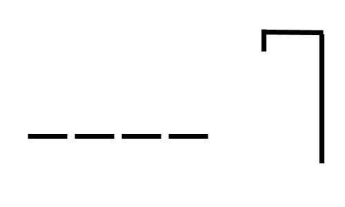

Ahorcado
El ahorcado (también llamado colgado) es un juego de adivinanzas de para dos o más jugadores. Un jugador piensa en una palabra, frase u oración y el otro trata de adivinarla según lo que sugiere por letras o números.
Ir al Juego